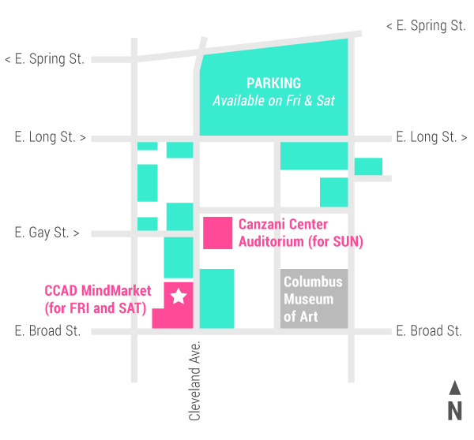
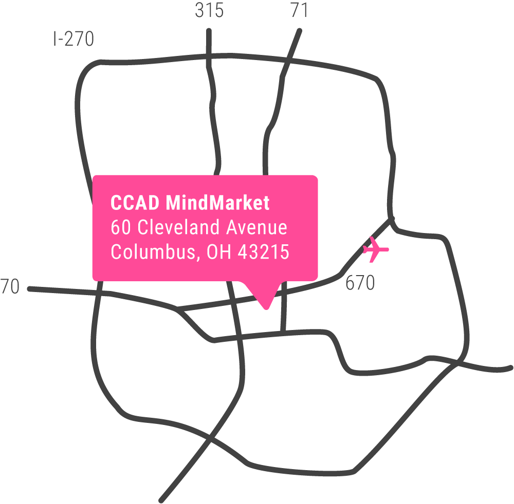

Doors Open, Scrumptious Breakfast to start the day!
10:00am
Morning Business & Non-profit Mentors Arrive
12:00pm
Lunch
12:45pm
Circle Up for Community Updates
2:00pm
Afternoon Business & Non-profit Mentors Arrive
6:00pm
Dinner
7:30pm
Community Updates
11:15pm
Wrap up for Day! Facilities Close
Sunday — February 21
9:00am
Doors Open, Scrumptious Breakfast to start the day!
10:30am
Morning Business/Non-profit Mentors Arrive
12:00pm
Lunch
12:30pm
Mentor One-on-Ones
3:00pm
Start Preparing Presentations
3:30pm
Presentation Tech Check
5:00pm
Dinner
5:30pm
Community Arrives and Final Presentations
8:00pm
Judging & Awards
8:30pm
Post-Event Celebration
Attendants can park in any CCAD parking lot Friday, Saturday, and Sunday, as well as the church across the street from the Mind Market on Friday and Saturday (not Sunday).

Note: All events will be taking place at the CCAD MindMarket.